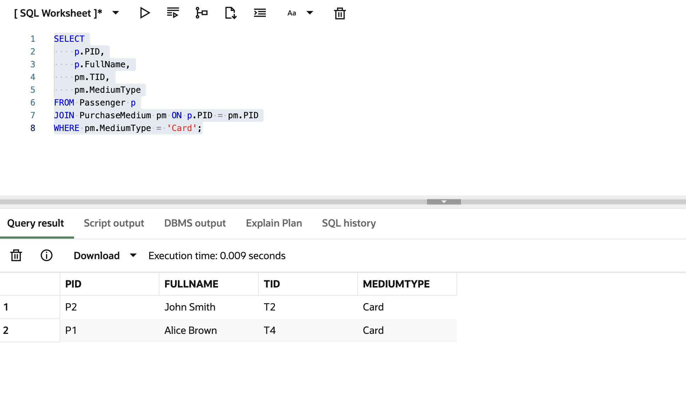
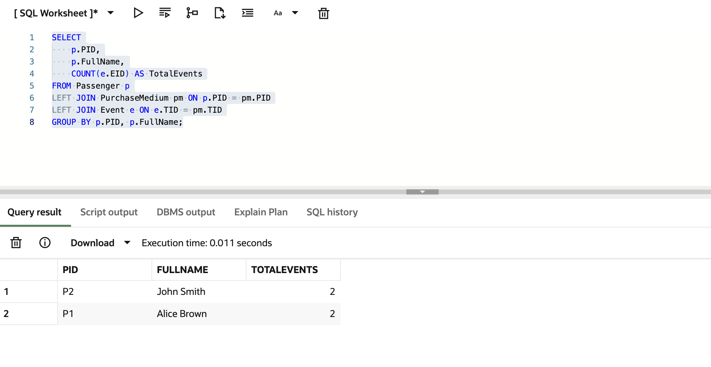
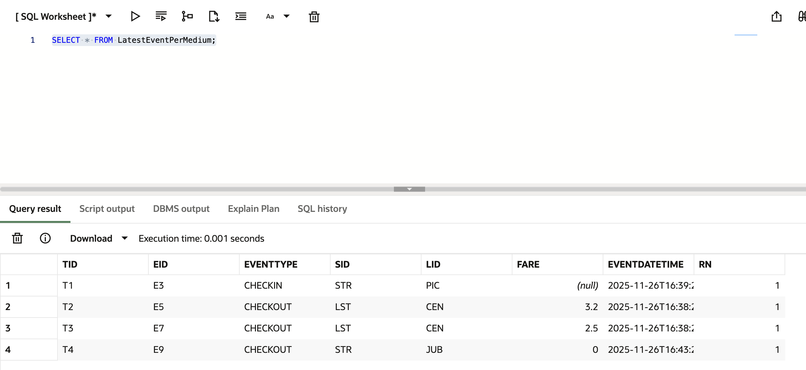
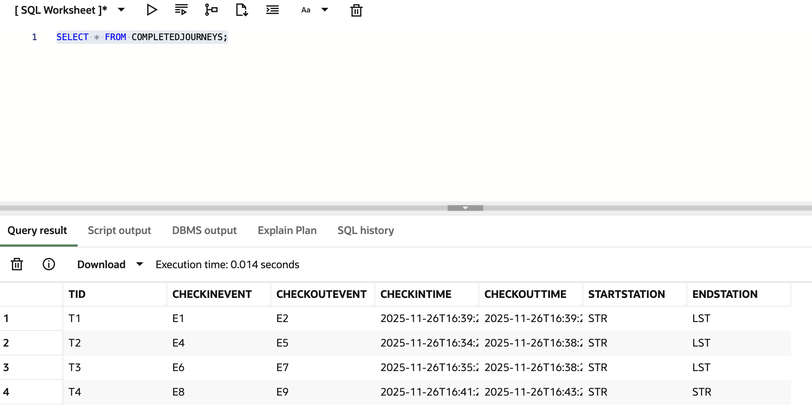

1NF
Atomic Data
Relations were structured so attributes contained atomic values and repeating groups were removed.
DATABASE SYSTEMS • ORACLE SQL • DATABASE DESIGN
A university Database Systems project involving the design and implementation of a relational database for transport event data. The project progressed from conceptual ER modelling through relational schema design and normalisation to an Oracle SQL implementation with constraints, queries, views and database logic.
01 — OVERVIEW
The project models transport activity using individual passenger check-in and check-out events. Rather than assuming that complete journeys already existed in the source data, events were modelled explicitly and relationships were created between passengers, purchase media, stations, lines and transport events.
This provided the foundation for querying passenger activity, station usage, payment media and completed or incomplete journeys.
02 — CONCEPTUAL DESIGN
The database was first modelled conceptually using a Classic Chen Entity Relationship diagram. The model identifies the major entities, their attributes, relationships, cardinalities and participation constraints.
Conceptual ER model showing passengers, purchase media, stations, lines and transport events. Click the diagram to view it at full size.
03 — RELATIONAL DESIGN
The conceptual model was converted into a relational schema with primary keys, foreign keys and an associative StationLine relation. StationLine resolves the many-to-many relationship between stations and lines using a composite key.
Relational schema showing table references and primary and foreign key relationships. Click the diagram to view it at full size.
04 — NORMALISATION
The relational design was analysed through First, Second and Third Normal Form. Attributes were separated into appropriate relations and dependencies were considered to reduce duplication and avoid insertion, update and deletion anomalies.
1NF
Relations were structured so attributes contained atomic values and repeating groups were removed.
2NF
Non-key attributes were considered against their complete keys, including the composite key used by StationLine.
3NF
The final design separates data into relations so non-key attributes depend on the relevant key rather than other non-key attributes.
05 — IMPLEMENTATION
The relational design was implemented in Oracle SQL using table definitions, primary keys, foreign keys and integrity constraints. Test data was then used to validate relationships and query the resulting database.
CREATE TABLE StationLine (
SID VARCHAR2(10),
LID VARCHAR2(10),
CONSTRAINT pk_stationline
PRIMARY KEY (SID, LID),
CONSTRAINT fk_stationline_station
FOREIGN KEY (SID)
REFERENCES Station(SID),
CONSTRAINT fk_stationline_line
FOREIGN KEY (LID)
REFERENCES Line(LID)
);Example of using a composite primary key and foreign-key constraints to represent the Station-Line relationship.
06 — DATA QUERYING
SQL queries were developed to retrieve, filter, combine and aggregate transport data. The work included filtering with WHERE, sorting, date formatting, aggregate functions, GROUP BY, inner joins, left joins and queries across related tables.
QUERY 01
Passenger records were connected to purchase media and transport events using LEFT JOIN operations. Events were then counted for each passenger using aggregation.
SELECT
p.PID,
p.FullName,
COUNT(e.EID) AS TotalEvents
FROM Passenger p
LEFT JOIN PurchaseMedium pm
ON p.PID = pm.PID
LEFT JOIN Event e
ON e.TID = pm.TID
GROUP BY p.PID, p.FullName;QUERY 02
Event records were grouped by line to calculate activity across the transport network.
SELECT
LID,
COUNT(*) AS TotalEvents
FROM Event
GROUP BY LID;QUERY 03
Passenger and purchase-medium relations were joined to identify passengers using card-based payment media.
SELECT
p.PID,
p.FullName,
pm.TID,
pm.MediumType
FROM Passenger p
JOIN PurchaseMedium pm
ON p.PID = pm.PID
WHERE pm.MediumType = 'Card';07 — DATABASE IN OPERATION
The implemented database was tested in Oracle SQL using queries across related tables and reusable views. These outputs demonstrate joins, aggregation and higher-level analysis of transport events.




08 — DATABASE LOGIC
The implementation extended beyond individual queries by creating reusable database views and validation logic for common transport analysis tasks.
Identifies the latest recorded event associated with each purchase medium.
Combines related check-in and check-out events to support journey-level analysis including journey times and start and end stations.
Aggregates event activity by station to provide a reusable station-level view.
Summarises purchase-media information associated with passenger records.
DATA INTEGRITY
Database logic was also implemented to validate card-related information when card payment media was used, adding an additional integrity check beyond the relational key structure.
09 — REPRODUCE THE DATABASE
The complete Oracle SQL implementation is included with this portfolio project. The source contains the database structure, relationships, constraints, sample data, validation logic and database views used by the project.
DATABASE.TXT
View or download the complete SQL source, copy its contents into an Oracle SQL environment such as Oracle LiveSQL, and execute the script to create and populate the database. The database can then be explored using SQL queries.
10 — TECHNOLOGIES & CONCEPTS